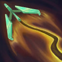

起手裝備
 長劍
長劍
狂暴利刃補入第二件，收集者、無盡建立暴擊核心；多明尼克處理物防，嗜血者保留續戰。


五件成裝與鞋子分開列示；起手與核心是購買路線，不是額外佔用的成裝欄位。鞋子完成時機仍依對線壓力與回城金錢調整。


遇強則強對應三次普攻的觸發機制；傳說嗜血替代攻速，配合雙擊補續航。


閃現避免擺盪路徑被卡後無法脫身；點燃支援前期主動換血。
加點優先：Q > E > W
主Q往返清線、副E位移傷害，W最後；不是把復活被動當作主升技能。
普攻或技能連續命中三次會追加傷害，目標是英雄時還會取得護盾；普攻可接第二發，也能取消第二發改取跑速。
有後續版本調整的項目以較新數值為準；未列出者不代表完整技能成長表。
丟出可延長飛行距離的迴力鏢，往返都能造成傷害並提供視野。
有後續版本調整的項目以較新數值為準；未列出者不代表完整技能成長表。
被動標記擊殺友軍的惡徒；主動偽裝並追蹤惡徒，擊殺可復活被其擊殺的友軍。

射出鉤索繞地形擺盪並連續射擊，可再次施放跳離，是核心位移與輸出技能。
有後續版本調整的項目以較新數值為準；未列出者不代表完整技能成長表。
鎖定目標蓄力多發子彈後射擊；子彈可被英雄、士兵與建築阻擋。
有後續版本調整的項目以較新數值為準；未列出者不代表完整技能成長表。
雙擊與取消第二發的跑速取捨、擺盪被英雄碰撞中止、大絕會被單位阻擋均保留。
被動第一發 → 被動第二發 → 1技往返 → 利用跑速拉開
被動雙發配合一技可快速疊滿印記；對手準備反打時取消第二發普攻，換取跑速撤離。
3技掛牆 → 3技擺盪射擊 → 落地普攻 → 1技迴力鏢 → 被動補傷害
選擇能繞過前排的牆面，擺盪過程不要碰到敵方英雄；落地後補普攻與一技完成印記。
2技偽裝 → 沿牆追蹤 → 3技切入 → 1技輸出 → 普攻 → 4技收尾
沿牆接近可延長偽裝時間，鎖定惡徒後用鉤索切入；大絕會被士兵、英雄與建築阻擋，先確認射線。
利用被動雙發與一技往返壓制近戰英雄，取消第二發普攻可取得跑速拉開。鉤索進攻前先確認牆面角度與敵方打野位置。
蒐集者 → 狂暴利刃 → 無盡之刃為預設前三件。狂暴利刃補入第二件，收集者、無盡建立暴擊核心；多明尼克處理物防，嗜血者保留續戰。
正面輸出距離有限，先用一技消耗並等待側翼進場角度。鉤索要繞開前排並確保不被碰撞中斷，大絕留給沒有士兵或建築遮擋的殘血目標。
以中路分頁的威脅為主，重點為犽宿、奧莉安娜、麗珊卓；移除同時列於有利與不利的衝突，對局為機制建議而非勝率排序。
對局名單是機制與分路判斷，不代表固定勝率；需同時看雙方熟練度、兵線與陣容。
狂暴利刃補入第二件，收集者、無盡建立暴擊核心；多明尼克處理物防，嗜血者保留續戰。
避開可連續E的小兵路徑，重要投射物等待風牆空窗再交。
同時注意本人與球的位置，避免站在球附近讓QW和R一起命中。
保留對付W／R控制的距離，不追著E冰爪走進埋伏；她交出自保後再補傷害。
依本頁目前五件成裝與鞋線替換；同一格多個建議擇一。先看實際傷害和控制，再決定是否犧牲輸出或保命。
高
觸發：以致死宣告系成裝替換既有後段穿透格；臨界點或多明尼克與新穿透裝不無腦疊加。
多明尼克的問候 → 致死宣告
以致死宣告系成裝替換既有後段穿透格；臨界點或多明尼克與新穿透裝不無腦疊加。
以致死宣告系成裝替換既有後段穿透格；臨界點或多明尼克與新穿透裝不無腦疊加。
鞋子更換時需連同三級升級路線一起更換；五件成裝不含鞋，主動裝仍占成裝格。
高
觸發：只有護盾持續妨礙擊殺時才換巨蛇鋒牙；原本的防禦、續航或三相普攻收益會降低。
嗜血者 → 巨蛇鋒牙
只有護盾持續妨礙擊殺時才換巨蛇鋒牙；原本的防禦、續航或三相普攻收益會降低。
只有護盾持續妨礙擊殺時才換巨蛇鋒牙；原本的防禦、續航或三相普攻收益會降低。
鞋子更換時需連同三級升級路線一起更換；五件成裝不含鞋，主動裝仍占成裝格。
高
觸發：復活甲提供團戰第二次機會，仍須隊友保護復活位置；已有復活甲時保留，別重複購買。
嗜血者 → 守護天使
復活甲提供團戰第二次機會，仍須隊友保護復活位置；已有復活甲時保留，別重複購買。
復活甲提供團戰第二次機會，仍須隊友保護復活位置；已有復活甲時保留，別重複購買。
鞋子更換時需連同三級升級路線一起更換；五件成裝不含鞋，主動裝仍占成裝格。
高
觸發：法術爆發為主時後段改魔提斯深淵；若另外已換盾弓或史特拉克，需重新檢查命脈重複。
嗜血者 → 魔提斯深淵
法術爆發為主時後段改魔提斯深淵；若另外已換盾弓或史特拉克，需重新檢查命脈重複。
法術爆發為主時後段改魔提斯深淵；若另外已換盾弓或史特拉克，需重新檢查命脈重複。
鞋子更換時需連同三級升級路線一起更換；五件成裝不含鞋，主動裝仍占成裝格。
高
觸發：魔法傷害與可被韌性縮短的控制占主導時，整條鞋線改水星之靴→鎖鏈軍靴；韌性不縮短擊飛。
貪婪護脛 → 水星之靴
魔法傷害與可被韌性縮短的控制占主導時，整條鞋線改水星之靴→鎖鏈軍靴；韌性不縮短擊飛。
魔法傷害與可被韌性縮短的控制占主導時，整條鞋線改水星之靴→鎖鏈軍靴；韌性不縮短擊飛。
鞋子更換時需連同三級升級路線一起更換；五件成裝不含鞋，主動裝仍占成裝格。
本頁校正版本：7.3b；校正日期：2026-10-15。
參考來源標示版本：7.3b
Tier、出裝、符文與對局是本站編輯建議，不是官方推薦或已驗證台服勝率。v118延續同日v117的逐路複核，針對來源缺口及數值衝突再核對；未宣稱所有技能已在手機內逐級實測。
評級理由：埃可尚中路保留B；同分路7.3b編輯參考。雙擊與取消第二發的跑速取捨、擺盪被英雄碰撞中止、大絕會被單位阻擋均保留。。
Riot 官方資料 ↗ · WildRiftFire 參考攻略 ↗
本頁延續2026/10/15 v117的中路逐項複核，當前採用7.3b來源；來源只用作配置與機制參考，不等同官方推薦或台服即時勝率。
埃可尚中路保留B；同分路7.3b編輯參考。雙擊與取消第二發的跑速取捨、擺盪被英雄碰撞中止、大絕會被單位阻擋均保留。。
歷史資料有後續調整時，以較新版本數值為準。
| 項目 | 調整前 | 調整後 |
|---|---|---|
| 每級物攻 | 5.5 | 4.5 |
| 項目 | 調整前 | 調整後 |
|---|---|---|
| 跑速 | 40 - 120（取決於等級） | 20 - 80（取決於等級）×（1 + 100%額外攻速） |
| 項目 | 調整前 | 調整後 |
|---|---|---|
| 傷害 | 10 / 40 / 70 / 100 + 85%物攻 | 60 / 110 / 160 / 210 + 70% × 額外物攻 |
| 士兵傷害係數 | 55 / 70 / 85 / 100% | 50 / 60 / 70 / 80% |
| 項目 | 調整前 | 調整後 |
|---|---|---|
| 暴擊傷害 | 150% | 目前暴擊傷害 × 0.7 |
| 項目 | 調整前 | 調整後 |
|---|---|---|
| 每發子彈傷害 | （20 / 30 / 40 + 10%物攻）-（80 / 120 / 160 + 40%物攻） | （25 / 35 / 45 + 15%物攻）- （75 / 105 / 135 + 45%物攻） |
| 暴擊能力值傷害增加 | 50% * 暴擊率 | 30% × 暴擊率 +（暴擊傷害 - 2）× 暴擊率 × 0.3 |